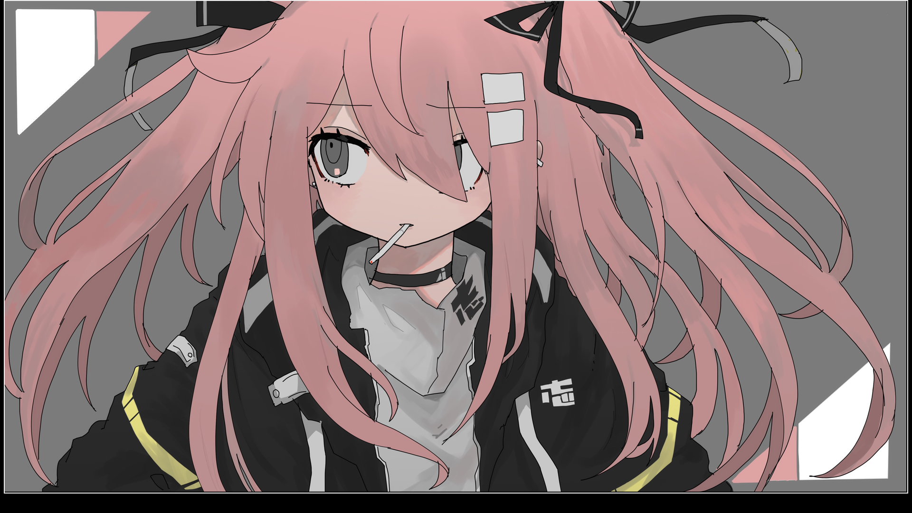

SlideShow
2021.10.15
SlideShowをダウンロードこれは何？
スライドショーです。画像を流すあれです。
こんな感じで画像が流れていきます。
なんで作ったの？
Windowsデフォルトの写真アプリ(Photo)のスライドショーはたまに使えないことがあるので作りました。
どうやって使うの？
動画を作ったのでこれをどうぞ
便利かもしれない機能
・スライドショーの画面で画像をクリックすると、画像をデフォルトイメージビュアーで開きます。これ、後でもう一回見たいって時に
・Windowの名前が今開いている画像の名前になります。(スライドショーは全画面で使うからいらなくね？)
ソースコードとかって読める？
Githubで公開してます。
Gtihubのリンクまあ、下にもありますが。
詳細
言語 : Python3(3.9.6)
使用ライブラリ : os, math, tkinter, subprocess,PIL,ImageTK